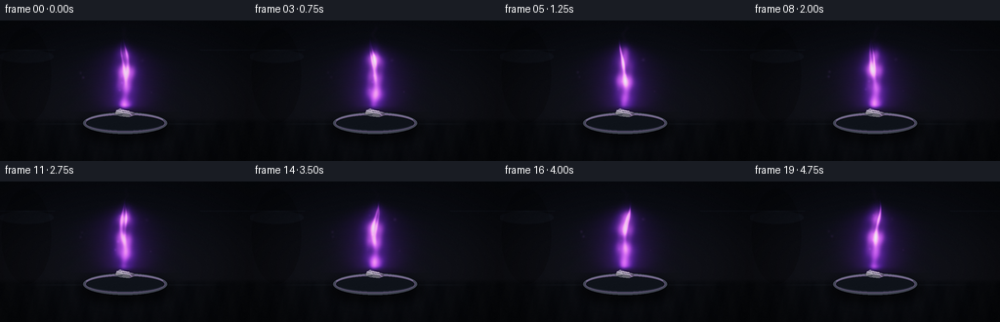
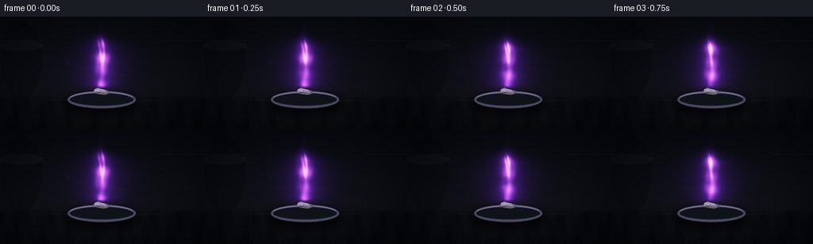

CODING AGENTS AS PIXEL WORLD MODELS
traex/DeepSeek-V4.1-Flash · phygen_130
点击播放 · 原生 RGB 像素
逐轮保存的候选
回放视频、检查图与代码变化。
每份候选均可单独播放。实际图片检查记录在下方工具轨迹中。
候选 01播放与检查图
点击播放 · 原生 RGB 像素


展开代码变化
--- 上一保存版本
+++ 本次保存版本
@@ -0,0 +1,247 @@
+from pathlib import Path
+
+import numpy as np
+from PIL import Image, ImageDraw, ImageFilter
+
+import artifact_io
+
+
+WIDTH = 256
+HEIGHT = 144
+FRAMES = 20
+FPS = 4
+SCALE = 3
+W = WIDTH * SCALE
+H = HEIGHT * SCALE
+
+
+def smoothstep(edge0, edge1, values):
+ x = np.clip((values - edge0) / (edge1 - edge0), 0.0, 1.0)
+ return x * x * (3.0 - 2.0 * x)
+
+
+def make_background():
+ y, x = np.mgrid[0:H, 0:W]
+ xf = x / W
+ yf = y / H
+
+ top = np.array([0.027, 0.034, 0.055], dtype=np.float32)
+ middle = np.array([0.048, 0.050, 0.068], dtype=np.float32)
+ lower = np.array([0.024, 0.029, 0.040], dtype=np.float32)
+ blend = smoothstep(0.0, 0.72, yf)[..., None]
+ image = top * (1.0 - blend) + middle * blend
+ bench_mix = smoothstep(0.685, 0.735, yf)[..., None]
+ image = image * (1.0 - bench_mix) + lower * bench_mix
+
+ # A cool, soft light source gives the bench depth without competing with the flame.
+ pool = np.exp(-(((xf - 0.48) / 0.43) ** 2 + ((yf - 0.58) / 0.48) ** 2))
+ image += pool[..., None] * np.array([0.013, 0.016, 0.026], dtype=np.float32)
+
+ # Very faint shelf and vessel silhouettes establish a laboratory setting.
+ left_vessel = ((xf - 0.105) ** 2 / 0.010 + (yf - 0.39) ** 2 / 0.115) < 1.0
+ vessel_rim = ((xf - 0.105) ** 2 / 0.012 + (yf - 0.255) ** 2 / 0.0022) < 1.0
+ image[left_vessel] *= 0.80
+ image[vessel_rim] += np.array([0.018, 0.023, 0.030], dtype=np.float32)
+ shelf = (yf > 0.205) & (yf < 0.214) & ((xf < 0.22) | (xf > 0.80))
+ image[shelf] += np.array([0.018, 0.021, 0.027], dtype=np.float32)
+
+ # Fine table grain and a restrained front-edge highlight.
+ grain = (
+ np.sin(x * 0.063 + y * 0.018)
+ + 0.55 * np.sin(x * 0.131 - y * 0.031 + 1.7)
+ + 0.30 * np.sin(x * 0.277 + y * 0.071 + 4.2)
+ ) / 1.85
+ bench = smoothstep(0.690, 0.735, yf)
+ image += (grain * bench * 0.010)[..., None]
+ image += (
+ np.exp(-((yf - 0.735) / 0.006) ** 2) * smoothstep(0.03, 0.28, xf) * (1.0 - smoothstep(0.72, 0.98, xf))
+ )[..., None] * np.array([0.020, 0.024, 0.030], dtype=np.float32)
+
+ # Darken the corners gently so the flame remains the focal point.
+ vignette = 1.0 - 0.38 * smoothstep(0.36, 0.92, np.sqrt(((xf - 0.5) / 0.72) ** 2 + ((yf - 0.52) / 0.85) ** 2))
+ image *= vignette[..., None]
+ return np.clip(image, 0.0, 1.0)
+
+
+def draw_dish_and_potassium(base, frame_index):
+ image = Image.fromarray(np.round(base * 255.0).astype(np.uint8), "RGB")
+ draw = ImageDraw.Draw(image, "RGBA")
+ t = frame_index / FPS
+
+ cx = 128 * SCALE
+ dish_y = 105 * SCALE
+ rx = 43 * SCALE
+ ry = 11 * SCALE
+
+ # Soft contact shadow under the watch glass.
+ shadow = Image.new("RGBA", (W, H), (0, 0, 0, 0))
+ sd = ImageDraw.Draw(shadow)
+ sd.ellipse((cx - rx - 5 * SCALE, dish_y - ry + 2 * SCALE, cx + rx + 5 * SCALE, dish_y + ry + 9 * SCALE), fill=(0, 0, 0, 145))
+ shadow = shadow.filter(ImageFilter.GaussianBlur(5 * SCALE))
+ image = Image.alpha_composite(image.convert("RGBA"), shadow)
+ draw = ImageDraw.Draw(image, "RGBA")
+
+ # Watch-glass rim and shallow ceramic basin.
+ draw.ellipse((cx - rx, dish_y - ry, cx + rx, dish_y + ry), fill=(25, 29, 38, 255), outline=(65, 70, 84, 255), width=2 * SCALE)
+ draw.ellipse((cx - rx + 2 * SCALE, dish_y - ry + 2 * SCALE, cx + rx - 2 * SCALE, dish_y + ry - 2 * SCALE), fill=(14, 18, 25, 255), outline=(91, 78, 111, 135), width=SCALE)
+ draw.arc((cx - rx + SCALE, dish_y - ry + SCALE, cx + rx - SCALE, dish_y + ry - SCALE), 198, 338, fill=(132, 118, 157, 125), width=SCALE)
+ draw.arc((cx - rx + 4 * SCALE, dish_y - ry + 4 * SCALE, cx + rx - 4 * SCALE, dish_y + ry - 3 * SCALE), 15, 158, fill=(31, 37, 50, 255), width=SCALE)
+
+ # Potassium chunk: irregular, softly tarnished, and lit by the lilac flame.
+ shrink = int(round(t * 0.16 * SCALE))
+ left = cx - 11 * SCALE + shrink
+ right = cx + 10 * SCALE - shrink
+ top = 91 * SCALE + shrink // 2
+ bottom = 99 * SCALE
+ points = [
+ (left + 2 * SCALE, top + 1 * SCALE),
+ (cx - 5 * SCALE, top - SCALE),
+ (cx + 1 * SCALE, top + SCALE),
+ (right - SCALE, top + 3 * SCALE),
+ (right, bottom - 2 * SCALE),
+ (cx + 4 * SCALE, bottom),
+ (cx - 5 * SCALE, bottom - SCALE),
+ (left, bottom - 3 * SCALE),
+ ]
+ draw.polygon(points, fill=(100, 101, 108, 255))
+ facets = [
+ [(left + 2 * SCALE, top + 1 * SCALE), (cx - 5 * SCALE, top - SCALE), (cx - 2 * SCALE, top + 4 * SCALE), (left + SCALE, top + 5 * SCALE)],
+ [(cx - 2 * SCALE, top + 4 * SCALE), (cx + 1 * SCALE, top + SCALE), (right - SCALE, top + 3 * SCALE), (cx + 5 * SCALE, top + 5 * SCALE)],
+ [(left + SCALE, top + 5 * SCALE), (cx - 2 * SCALE, top + 4 * SCALE), (cx - 4 * SCALE, bottom - SCALE), (left, bottom - 3 * SCALE)],
+ [(cx + 5 * SCALE, top + 5 * SCALE), (right - SCALE, top + 3 * SCALE), (right, bottom - 2 * SCALE), (cx + 4 * SCALE, bottom)],
+ ]
+ fills = [(139, 138, 145, 255), (119, 111, 133, 255), (72, 75, 86, 255), (88, 80, 103, 255)]
+ for facet, fill in zip(facets, fills):
+ draw.polygon(facet, fill=fill)
+ draw.line((left + 2 * SCALE, top + SCALE, cx - 3 * SCALE, top + 3 * SCALE, cx + 5 * SCALE, top + 4 * SCALE), fill=(193, 183, 204, 230), width=SCALE)
+ draw.line((cx + 5 * SCALE, top + 5 * SCALE, cx + 7 * SCALE, bottom - 2 * SCALE), fill=(170, 133, 191, 160), width=SCALE)
+
+ # A narrow, steady reaction seam keeps the burn readable at this scale.
+ pulse = 0.78 + 0.22 * np.sin(t * 2.1)
+ glow = int(150 + 55 * pulse)
+ draw.line((cx - 4 * SCALE, top + SCALE, cx + 4 * SCALE, top + 2 * SCALE), fill=(255, 224, 255, glow), width=SCALE)
+ return np.asarray(image.convert("RGB"), dtype=np.float32) / 255.0
+
+
+def flame_fields(frame_index):
+ y, x = np.mgrid[0:H, 0:W]
+ t = frame_index / FPS
+ phase = 2.0 * np.pi * t / 5.0
+
+ base_x = 128.0 * SCALE
+ base_y = 92.0 * SCALE
+ flame_h = 72.0 * SCALE
+ v = (base_y - y) / flame_h
+ valid = v >= -0.02
+
+ # Smooth, low-amplitude motion gives a steady burn rather than a guttering fire.
+ sway = (
+ 1.3 * SCALE * np.sin(2.0 * np.pi * v * 0.72 + phase * 0.70)
+ + 0.55 * SCALE * np.sin(2.0 * np.pi * v * 1.65 - phase * 0.52 + 0.8)
+ )
+ center = base_x + sway * smoothstep(0.05, 0.72, v)
+ dx = x - center
+ width = (5.2 + 10.3 * np.sin(np.pi * np.clip(v, 0.0, 1.0)) ** 0.55) * SCALE
+ width *= 1.0 - 0.20 * smoothstep(0.55, 1.0, v)
+
+ envelope = smoothstep(-0.015, 0.085, v) * (1.0 - smoothstep(0.73, 1.03, v))
+ texture = (
+ 0.70
+ + 0.15 * np.sin(13.0 * v - 3.0 * phase + 1.2)
+ + 0.10 * np.sin(25.0 * v + 9.0 * (dx / W) + 2.4 * phase)
+ + 0.07 * np.sin(17.0 * (dx / W) * 8.0 - 12.0 * v + 4.0)
+ )
+ body = np.exp(-2.05 * (dx / width) ** 2) * envelope * np.clip(texture, 0.38, 1.0)
+
+ # Two soft upper tongues make the flame shape distinctive while retaining one coherent body.
+ tongue1_dx = dx - (4.6 * SCALE * np.sin(2.7 * v + phase * 0.9 + 0.3) - 0.4 * SCALE) * smoothstep(0.28, 0.92, v)
+ tongue1_w = np.clip(1.2 + 4.8 * (1.0 - v), 0.45, None) * SCALE
+ tongue1 = np.exp(-2.8 * (tongue1_dx / tongue1_w) ** 2) * smoothstep(0.22, 0.48, v) * (1.0 - smoothstep(0.73, 1.08, v))
+ tongue2_dx = dx - (4.0 * SCALE * np.sin(3.4 * v - phase * 0.65 + 2.4)) * smoothstep(0.30, 0.90, v)
+ tongue2_w = np.clip(0.9 + 4.0 * (1.0 - v), 0.40, None) * SCALE
+ tongue2 = np.exp(-3.2 * (tongue2_dx / tongue2_w) ** 2) * smoothstep(0.30, 0.56, v) * (1.0 - smoothstep(0.70, 1.06, v))
+
+ emission = np.clip(body + 0.55 * tongue1 * texture + 0.42 * tongue2 * texture, 0.0, 1.7)
+ emission *= valid
+
+ halo = np.exp(-0.78 * (dx / (width * 1.75)) ** 2) * envelope * 0.34
+ halo += np.exp(-(((x - base_x) / (31.0 * SCALE)) ** 2 + ((y - base_y) / (27.0 * SCALE)) ** 2)) * 0.23
+ halo *= valid
+ return emission, halo, dx, v, width, phase
+
+
+def render_flame(frame_index):
+ emission, halo, dx, v, width, phase = flame_fields(frame_index)
+ t = frame_index / FPS
+
+ outer = np.array([0.30, 0.055, 0.72], dtype=np.float32)
+ middle = np.array([0.84, 0.31, 1.00], dtype=np.float32)
+ inner = np.array([1.00, 0.72, 1.00], dtype=np.float32)
+ hot = np.array([1.00, 0.94, 1.00], dtype=np.float32)
+
+ mix_mid = smoothstep(0.14, 0.72, emission)[..., None]
+ color = outer * (1.0 - mix_mid) + middle * mix_mid
+ core = smoothstep(0.56, 1.15, emission) * np.exp(-((dx / (width * 0.55)) ** 2))
+ core = core[..., None]
+ color = color * (1.0 - 0.74 * core) + inner * (0.74 * core)
+ hot_spot = smoothstep(0.86, 1.38, emission)[..., None] * (1.0 - smoothstep(0.04, 0.52, v))[..., None]
+ color = color * (1.0 - 0.62 * hot_spot) + hot * (0.62 * hot_spot)
+
+ flame = np.clip(emission[..., None] * 0.92 * color, 0.0, 1.0)
+ halo_rgb = halo[..., None] * np.array([0.40, 0.09, 0.82], dtype=np.float32) * 0.58
+
+ # Thin rising wisps above the tip, kept subtle so the steady flame stays dominant.
+ y, x = np.mgrid[0:H, 0:W]
+ tip_y = 24.0 * SCALE
+ yy = np.clip((tip_y - y) / (22.0 * SCALE), 0.0, 1.0)
+ wisp_center = 128.0 * SCALE + (1.8 * np.sin(yy * 6.0 + phase + 1.1) + 0.8 * np.sin(yy * 13.0 - phase)) * SCALE
+ wisp = np.exp(-((x - wisp_center) / (2.0 * SCALE)) ** 2) * smoothstep(0.0, 0.25, yy) * (1.0 - smoothstep(0.65, 1.0, yy))
+ wisp *= 0.030 + 0.012 * np.sin(t * 1.4)
+ halo_rgb += wisp[..., None] * np.array([0.38, 0.16, 0.52], dtype=np.float32)
+ return np.clip(flame + halo_rgb, 0.0, 1.0)
+
+
+def render_frame(frame_index, background):
+ image = draw_dish_and_potassium(background, frame_index)
+ flame = render_flame(frame_index)
+
+ # Screen blending preserves the dark lab while making the lilac emission vivid.
+ image = 1.0 - (1.0 - image) * (1.0 - flame)
+
+ # A restrained atmospheric bloom around the source.
+ glow_source = Image.fromarray(np.round(np.clip(flame * 255.0 * 0.60, 0, 255)).astype(np.uint8), "RGB")
+ bloom = np.asarray(glow_source.filter(ImageFilter.GaussianBlur(5.5 * SCALE)), dtype=np.float32) / 255.0
+ image = 1.0 - (1.0 - image) * (1.0 - bloom * 0.32)
+
+ # Tiny suspended particles catch the violet light, adding depth without clutter.
+ rng = np.random.default_rng(130)
+ for index in range(8):
+ px = (82 + rng.random() * 94 + 2.5 * np.sin(frame_index * 0.37 + index)) * SCALE
+ py = (32 + rng.random() * 52 - frame_index * (0.10 + index * 0.015)) * SCALE
+ alpha = 0.09 + 0.04 * np.sin(frame_index * 0.7 + index)
+ radius = (0.55 + rng.random() * 0.55) * SCALE
+ x0, x1 = max(0, int(px - 3 * radius)), min(W, int(px + 3 * radius) + 1)
+ y0, y1 = max(0, int(py - 3 * radius)), min(H, int(py + 3 * radius) + 1)
+ if x1 <= x0 or y1 <= y0:
+ continue
+ gy, gx = np.mgrid[y0:y1, x0:x1]
+ spot = np.exp(-((gx - px) ** 2 + (gy - py) ** 2) / (2.0 * radius ** 2)) * alpha
+ image[y0:y1, x0:x1] += spot[..., None] * np.array([0.50, 0.28, 0.66], dtype=np.float32)
+
+ # Gentle highlight rolloff and fine sensor grain.
+ image = np.where(image > 0.76, 0.76 + 0.24 * np.tanh((image - 0.76) / 0.24), image)
+ grain = rng.normal(0.0, 0.0045, (H, W, 1)).astype(np.float32)
+ image = np.clip(image + grain, 0.0, 1.0)
+
+ small = Image.fromarray(np.round(image * 255.0).astype(np.uint8), "RGB").resize((WIDTH, HEIGHT), Image.Resampling.LANCZOS)
+ return np.asarray(small, dtype=np.uint8)
+
+
+def main():
+ background = make_background()
+ frames = np.stack([render_frame(index, background) for index in range(FRAMES)])
+ artifact_io.save(frames, Path(__file__).resolve().parent)
+
+
+if __name__ == "__main__":
+ main()
可观测工具轨迹
实际执行的命令与返回图片。
命令 1exit 0
/bin/bash -c "pwd && rg --files -g 'prompt.txt' -g 'GENERATION_RULES.md' -g 'task_spec.json' -g '"'!*.mp4'"'"
命令 2exit 0
/bin/bash -c 'git status --short && ls -la'
命令 3exit 0
/bin/bash -c 'cat prompt.txt'
命令 4exit 0
/bin/bash -c 'cat GENERATION_RULES.md'
命令 5exit 0
/bin/bash -c 'cat task_spec.json'
命令 6exit 0
/bin/bash -c "sed -n '1,240p' artifact_io.py && printf '\\n--- template ---\\n' && sed -n '1,260p' player_template.html"
命令 7exit 1
/bin/bash -c 'python generate.py'
命令 8exit 0
/bin/bash -c 'python generate.py'
命令 9exit 0
/bin/bash -c "ls -lh frames pixels.npz inspection.png transition_check.png index.html && python - <<'PY'
from PIL import Image
import numpy as np
im=np.array(Image.open('inspection.png').convert('RGB'))
print('inspection', im.shape, 'min/max/mean', im.min(), im.max(), im.mean(axis=(0,1)).round(1))
frames=np.load('pixels.npz')['pixels']
print('pixels', frames.shape, frames.dtype)
rgb=np.stack([(frames>>16)&255,(frames>>8)&255,frames&255],axis=-1)
print('per-frame mean', np.round(rgb.mean(axis=(1,2,3)),1))
print('per-frame std', np.round(rgb.std(axis=(1,2,3)),1))
print('frame diffs', np.round(np.abs(np.diff(rgb.astype(float),axis=0)).mean(axis=(1,2,3)),2))
print('channel means', np.round(rgb.mean(axis=(0,1,2)),1))
PY"命令 10exit 0
/bin/bash -c "python - <<'PY'
from PIL import Image
import numpy as np
for name in ['frames/00.png','frames/10.png','frames/19.png']:
a=np.array(Image.open(name).convert('RGB')).astype(float)
lum=a.mean(2)
# crop and block mean to 64x36
h,w=lum.shape
b=lum.reshape(36,h//36,64,w//64).mean((1,3))
chars=' .,:;irsXA253hMHGS#9B&@'
print('\\n',name)
for row in b:
print(''.join(chars[min(len(chars)-1,int(v/256*len(chars)))] for v in row))
PY"命令 11exit 0
/bin/bash -c "python - <<'PY'
from PIL import Image
import numpy as np
frames=np.load('pixels.npz')['pixels']
rgb=np.stack([(frames>>16)&255,(frames>>8)&255,frames&255],axis=-1)
print('shape', rgb.shape)
print('frame means', np.round(rgb.mean(axis=(0,1,3)),1))
print('frame mins', rgb.min(axis=(0,1,3)))
print('frame maxs', rgb.max(axis=(0,1,3)))
print('consecutive MAE', np.round(np.abs(np.diff(rgb.astype(float),axis=2)).mean(axis=(0,1,3)),2))
# Quantify brightest flame colors and central crop coverage.
for i in [0,5,10,15,19]:
a=rgb[:,:,i]
bright=a[a.mean(2)>80]
print(i, 'bright px',len(bright), 'mean', np.round(bright.mean(0),1) if len(bright) else None, 'max',a.max(axis=(0,1)))
PY"命令 12exit 0
/bin/bash -c "python - <<'PY'
from PIL import Image
import numpy as np
for i in [0,10,19]:
a=np.array(Image.open(f'frames/{i:02d}.png').convert('RGB'))
# 64x36 average, map luminance with a tighter contrast range
lum=a.mean(2)
b=lum.reshape(36,4,64,4).mean((1,3))
chars=' .:-=+*#%@'
print(f'\\nframe {i}')
for row in b:
print(''.join(chars[min(9,int(v/100*10))] for v in row))
PY"命令 13exit 0
/bin/bash -c "python - <<'PY'
from PIL import Image
import numpy as np
for i in [0,10,19]:
a=np.array(Image.open(f'frames/{i:02d}.png')).astype(float)
# sample central flame's brightest pixels and print bounding box of >120 luminance
m=a.mean(2)>120
ys,xs=np.where(m)
print(i, 'bbox', (xs.min(),ys.min(),xs.max(),ys.max()), 'center mean', np.round(a[ys,xs].mean(0),1))
# print flame width profile by rows (x range with lum > 80)
for y in range(20,95,5):
xx=np.where(a[y,:,0]>100)[0]
if len(xx): print(' y',y,'x',xx.min(),xx.max(),'peak',int(a[y,:,:].mean(1).max()))
PY"命令 14exit 0
/bin/bash -c "python - <<'PY'
from pathlib import Path
from PIL import Image
import json, re
import numpy as np
root=Path('.')
spec=json.loads((root/'task_spec.json').read_text())
frames=np.load(root/'pixels.npz')['pixels']
assert frames.shape == (spec['height'], spec['width'], spec['frames']), frames.shape
assert frames.dtype == np.uint32
pngs=sorted((root/'frames').glob('*.png'))
assert len(pngs)==spec['frames']
for p in pngs:
assert Image.open(p).size == (spec['width'], spec['height'])
html=(root/'index.html').read_text()
assert 'window.__pixelReady=true' in html
assert html.count('data:audio/wav') == 0
assert '\"width\":256' in html and '\"height\":144' in html and '\"frames\":20' in html
print('validated:', frames.shape, frames.dtype, len(pngs), 'PNG frames')
print('artifacts:', ', '.join(sorted(p.name for p in root.iterdir() if p.name in {'generate.py','index.html','pixels.npz','inspection.png','transition_check.png'})))
PY
python -m py_compile generate.py"保存候选 1 份；完成命令 14 次；可验证图片返回 0 张。原始 API 响应与完整日志保留在本地。